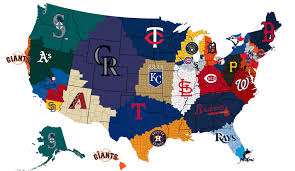

The MLB

Major League Baseball (MLB) is the most historic professional sports league in the United States and consists of 30 member clubs in the U.S. and Canada, representing the highest level of professional baseball. Led by Commissioner Robert D. Manfred, Jr., MLB remains committed to making an impact in the communities of the U.S., Canada and throughout the world, perpetuating the sport's larger role in society and permeating every facet of baseball's business, marketing, community relations and social responsibility endeavors. MLB currently features record levels of competitive balance, continues to expand its global reach through programming and content to fans all over the world, and registered records in games and minutes watched this season on MLB.TV. With the continued success of MLB Network and MLB digital platforms, MLB continues to find innovative ways for its fans to enjoy America's National Pastime and a truly global game.
Photo by Reddit
The Major League Baseball (MLB) is the premier professional baseball organization in North America, featuring 30 teams divided between the American League and the National League. Founded in 1903, MLB has grown into a major cultural and sporting institution, renowned for its rich history, legendary players, and iconic moments. The league operates on a seasonal format, with teams competing in a 162-game regular season, followed by the high-stakes postseason culminating in the World Series. MLB not only showcases exceptional athletic talent but also serves as a significant platform for community engagement and global outreach, reflecting the evolving dynamics of the sport while celebrating its storied past.

Photos from the MLB
these are the most liked and hated teams in the mlb because of what the do and because of there fan base for example the yankees fan base is something else they can be vary violent and say somethings they shouldnt say or do but have one of the biggest fan base in all of baseball. The Astros are one of the most hated teams in baseball because of what they did to win the league by cheating which made lots of baseball fans hate them because they stole the world seires from the Yankees and Dodgers. The NL and the AL acted as independent organizations from their founding in the 19th century. The two leagues engaged in what was known as the “baseball war” in the years prior to the merger, as the Midwest-based AL moved its teams into the established NL domain of the East Coast and wooed away star players from NL squads. The leagues established a truce in 1903 that resulted in the creation of the World Series, which matched the annual winners of each league to determine a national champion, as well as the National Commission, a three-man governing body that oversaw Major League Baseball but was replaced by a single commissioner of baseball in 1921.